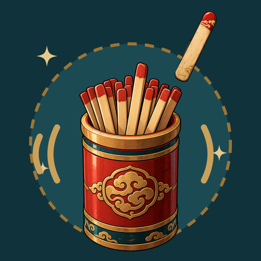

搖一搖手機抽籤、擲銅錢起卦、擲大吉到大凶的骰子，還有今日穿搭吃喝小籤，以及選擇困難時的「幫我決定」。免帳號，所有資料只存在你的手機上。
- 搖籤筒：六十首原創籤詩，附白話解籤與擲筊
- 銅錢六爻：三錢起卦，《周易》原文配白話
- 吉凶骰：大吉到大凶，一擲見分曉
- 今日小籤：幸運色、宜吃宜去、吉時方位
- 幫我決定：吃便當？吃火鍋？交給籤筒

搖一搖・問小事
搖一搖手機抽籤、擲銅錢起卦、擲大吉到大凶的骰子，還有今日穿搭吃喝小籤，以及選擇困難時的「幫我決定」。免帳號，所有資料只存在你的手機上。